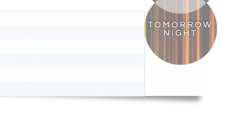

A list of rare edge cases where Prism highlights code incorrectly.
There are certain edge cases where Prism will fail. There are always such cases in every regex-based syntax highlighter.
However, Prism dares to be open and honest about them. If a failure is listed here, it doesn’t mean it will never be fixed. This is more of a “known bugs” list, just with a certain type of bug.
(* Nested block
(* comments
(* on more than
2 levels *)
are *)
not supported *)#cs
#cs
foo()
#ce
#ce{
if($1) {
if($2) {
}
}
} // <- Broken
%%
%%/+ /+ /+ this does not work +/ +/ +/q{ q{ q{ this does not work } } }'#{:atom} <- this should not be highligted'2 / 3 / 4The box 1A is a container`${ /* } */ a + b }`
`${ '}' }``${foo({ a: { b: { c: true } } })}`@import "some file.less";@import "@{themes}/tidal-wave.less";nav ul {
&:extend(.inline);
background: blue;
}
.a:extend(.b) {}foobar"param";mov ax,1100_1000b
mov ax,1100_1000y
mov ax,0b1100_1000
mov ax,0y1100_1000
dd 1.222_222_222# Doesn't work
# Does work # Does work when prefixed with a space^if(
$age>=4 # not too young
&& $age<=80 # and not too old
)halt.
trace.
:- if(test1).
section_1.
:- elif(test2).
section_2.
:- elif(test3).
section_3.
:- else.
section_else.
:- endif."Foobar ${foo({
bar => {baz => 42}
baz => 42
})} <- broken"{ or }f"{'}'}"\d .+---------------+----------+
| column 1 | column 2 |
+--------------+-----------+
| **bold**? | *italic*? |
+--------------+-----------+No inline markup should be highlighted in the following code.
2 * x a ** b (* BOM32_* ` `` _ __ |
"*" '|' (*) [*] {*} <*> ‘*’ ‚*‘ ‘*‚ ’*’ ‚*’ “*” „*“ “*„ ”*” „*” »*« ›*‹ «*» »*» ›*›/* Nested block
/* comments
are */
not supported */|x| x + 1i;.page
color = 5px + 9px
!width = 13px
.icon
width = !widtha:hover
text-decoration: underline/* Nested block
/* comments
are */
not supported */case-lambda argument lists are highlighted as functions(define plus
(case-lambda
(() 0)
((x) x)
((x y) (+ x y))
((x y z) (+ (+ x y) z))
(args (apply + args))))/* Nested block
/* comments
are */
not supported */But Textile inside HTML should be just fine.
<strong>This _should_ work properly.</strong>
*But this is <em>definitely</em> broken.*<div{% if foo %} class="bar"{% endif %}></div>{{#switch:{{PAGENAME}}
| L'Aquila = No translation
| L = Not OK
| L'Aquila = Entity escaping
| L'Aquila = Numeric char encoding
}}''Italic with '''bold''' inside''Some of our themes are not compatible with certain layouts.
Coy's shadows and background might not wrap around the code correctly if combined with float of flexbox layouts.
There are 2 possible workarounds:
The first workaround is setting display: flex-root; for the pre element. This will fix the issue but flex-root has limited browser support.
The second is adding clear: both; to the style of the pre element. This will fix the issue but it will change the way code blocks behave when overlapping with other elements.